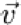
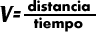

| Objetivo: |
Determinar la velocidad media e instantánea.
|
| |
| Introducción: |
|
En física, se define correctamente a la velocidad al decir que es "la rapidez con la que cambia de posición un móvil". Esta
magnitud expresa la variación de posición de un objeto en función de la distancia recorrida en la unidad de tiempo. Se suele
representar por la letra . La velocidad puede distinguirse según el lapso considerado, por lo cual se hace referencia a la velocidad
instantánea, la velocidad promedio, etcétera. En el Sistema Internacional de unidades su unidad es el metro por segundo.
La velocidad media o velocidad promedio informa sobre la velocidad en un intervalo dado. Se calcula dividiendo el
desplazamiento (delta x) por el tiempo transcurrido (delta t).
Permite conocer la velocidad de un móvil que se desplaza sobre una trayectoria, cuando el lapso de tiempo es infinitamente
pequeño, siendo entonces el espacio recorrido también muy pequeño, representando un punto de la trayectoria.
|
|
|
| Desarrollo Experimental: |
|
Montaje de acuerdo a la ilustración (Figura 1).
Preparación:
- Colocamos la pista sobre la mesa y el carrito para experimentos junto con tres pesos de ranura sobre la pista.
- Elevamos un poco (unos 3 cm.) un extremo de la pista con ayuda de la varilla de soporte de 6 cm.
- Sobre el extremo elevado colocamos el generador de marcas de tiempo. Al otro extremo de la pista colocamos el jinete, que evitará que el carrito ruede hacia abajo.
- Tiramos a través del generador de marcas de tiempo una cinta de papel metalizado de aproximadamente 1 m de longitud y la fijamos al carrito con ayuda de una etiqueta adhesiva.
- Aseguramos el otro extremo de la cinta a la pinza de cocodrilo del generador de marcas de tiempo.
- Conectamos el generador de marcas de tiempo a una tensión alterna de 15 V.
- Deslizamos el carro completamente hasta el generador de marcas. Directamente frente al carro colocamos un jinete sobre la pista para que lo detenga.
Experimento 1:
Ponemos la tecla en 100 ms.
Retirar el jinete que está junto al carrito. Este rueda aceleradamente, debido a que la pista está inclinada, y es detenido al final
por el jinete.
Poner la tecla en posición central y retiramos la cinta del soporte.
Tomamos la cuarta marca de tiempo y la marcamos como punto inicial de las medidas posteriores (marca D). Denominamos a
las siguientes marcas 1,2,3.. .8.entonces medimos las distancias previamente indicadas en la tabla y calculamos, con ayuda del
tiempo necesitado, la velocidad media respectivamente. La podemos calcular con la fórmula:

|
| Resultados y Conclusiones: |
|
El carrito se mueve aceleradamente y la velocidad aumenta. Por lo tanto, si queremos calcular la velocidad media para intervalos
cada vez más pequeños tomamos los valores y los aproximamos gradualmente a la velocidad instantánea del momento de la marca
0.
Finalmente medimos el intervalo antes de la marca 0 y después de la marca 0, sumamos los dos intervalos y dividimos entre 0,2 s.
obtenemos de esta manera la velocidad instantánea tan exactamente como es posible obtenerla con ayuda de los puntos de medida.
La velocidad instantánea es de _________m/s.
Todavía debemos calcular la velocidad media del vagón durante todo el recorrido. A partir del número de los puntos de medida
obtenemos la duración del movimiento (el número multiplicado por 0,1s). Obtenemos la distancia recorrida midiendo el intervalo
entre el primero y el último punto de marcación sobre la cinta registradora. Obtenemos la velocidad media por medio de una
división.
V= distancia/tiempo.
la velocidad media es de m/s.
Conclusión
Podemos calcular la velocidad instantánea como si fuera una velocidad media de un pequeño intervalo de tiempo.
Cuando decimos "el coche marcha ahora a 100km/h", ¿Recorre realmente 100km durante la próxima hora? No, ya que nos
referimos a la velocidad instantánea. Cuando decimos, hemos necesitado 1 h para recorrer 100km" tampoco queremos decir que la
velocidad ha sido de 100km/h, sino que el valor medio de la velocidad ha sido de 100km/h.
|
|
|
|